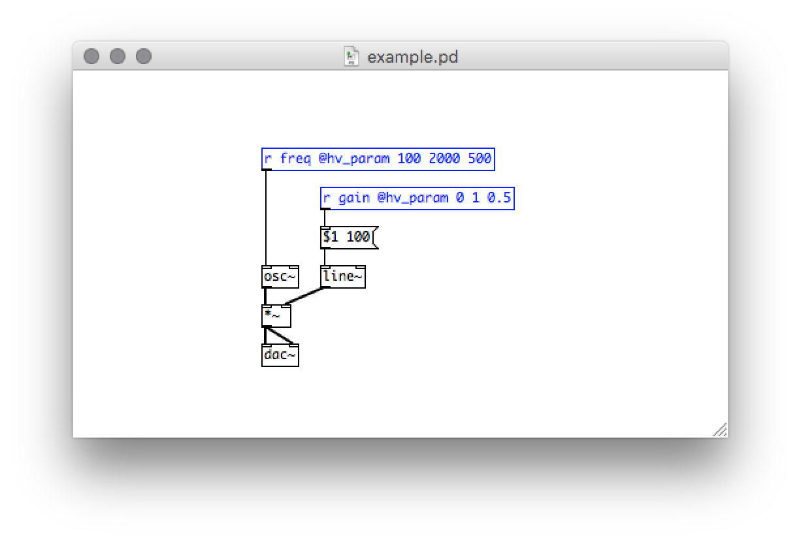
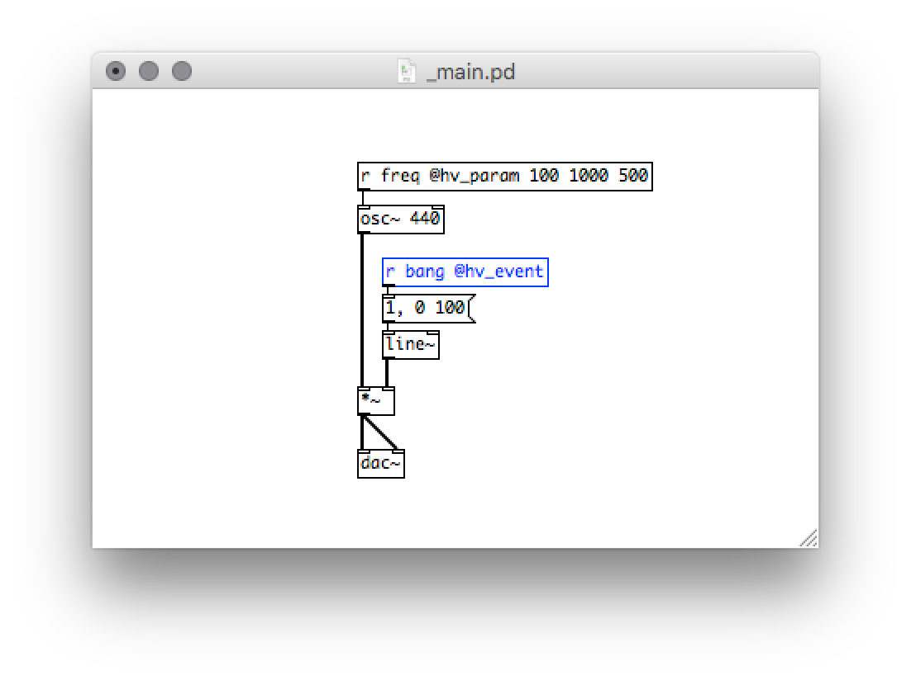
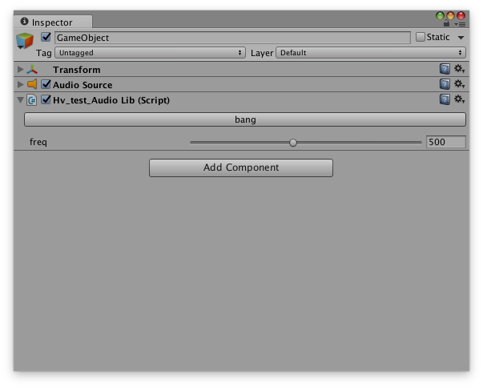
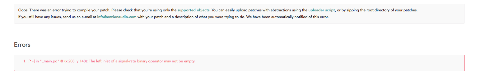
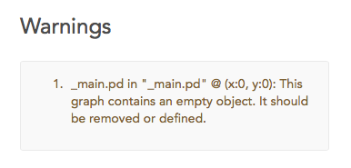

Getting Started
Audio Input/Output
To receive audio input into your patch add an [adc~] object.
To send audio output add a [dac~] The number of channels can be configured by providing arguments to object. For example [dac~ 1 2 3] will generate three output channels. [adc~ 1] will make a single channel of audio input.
Note that top-level graphs (e.g. _main.pd) should not have any [inlet~] or [outlet~] objects. These are reserved only for abstractions.
Exposing Parameters
Input Parameters
All (control) [receive] and [r] objects annotated with @hv_param will be exposed as input parameters in each framework. The name provided will propagate through to the plugin interface.
For example, [r gain @hv_param 0 1 0.5] will show up as "gain", with a minimum value of 0, a maximum value of 1, and a default value of 0.5. If a patch has multiple exposed receivers with the same name, they must all have the same minimum, maximum, and default values as well.
Receivers not annotated with @hv_param are still completely functional, they simply will not be exported to the framework interface.

Parameter Type
An optional parameter type can be set to which generator implementations can program custom features. The default type is float.
For example, [r toggle @hv_param 0 1 1 bool].
See the DPF docs for more information on how parameter types can be integrated into a generator.
Output Parameters
In the same manner as above, all (control) [send] and [s] objects annotated with @hv_param will be exposed as output parameters.
For example, [s envelope @hv_param].
Messages passed to these send objects can be forwarded on to other parts of the application. This is useful for creating audio-driven behaviours or extracting analysis information.
See the specific framework details for more information on output parameter support and integration details.
Externed Tables
When externing a table using @hv_table annotation, or appending it after the name of a graphical array, it becomes accessible from the heavy context.
[table array1 100 @hv_table]
Using spaces in array names is no longer supported.
GUI Objects
Most GUI objects will also accept send/receive configurations. These will be converted to send/receive objects in the Control Graph.
The following objects are supported:
- Number box (nbx)
- Vertical slider (vsl)
- Horizontal slider (hsl)
- Vertical radio buttons (vradio)
- Horizontal radio buttons (hradio)
- Bang (bng)
- Toggle (tgl)
- Knob (knob, else/knob)
- Float atom (floatatom)
An intermediate result GUI json is created containing these objects with their location, size and style. More information about the IR.
Exposing Events
All (control) [receive] and [r] objects annotated with @hv_event will be exposed as events in the Unity and Javascript targets only.

For example, [r bang @hv_event] will show up as a button called "bang" in the Unity Editor interface.

See the Unity docs for more information on exposing events and controlling them.
Metadata
Some generators, like Daisy and DPF, enable support for extra configuration metadata.json file using the -m. It depends on the generator what is supported. See the DPF docs for more information on setting meta data for plugins.
Simple Daisy example that selects the desired board to build for:
Errors
If there's an incompatibility within the patch, Heavy will generate an error message.

Warnings
Heavy will also perform patch analysis to look for common mistakes and inconsitencies between Pd and heavy behaviour. The targets will still be generated correctly but it might be useful information for example when cleaning up the patch.

Reporting Issues
If you experience any problems or have some thoughts on how to improve heavy make sure to browse and contribute to our public issue tracker.
Tips and Tricks
Just because pd-vanilla can run your patch, does not mean it will behave exactly the same using Heavy. Extra care needs to be taken when dealing with control messages and certain PD object features.
- Make sure to go over the known limitations to see if you are using objects incorrectly.
- Try to move as much of your patch into the signal domain as you can. Heavy is optimized for signal processing and every control rate operation can introduce interruptions and additional delay. Use control logic at the very beginning or the very end of the dataflow if possible.
- Make sure the order in your control flow works as intended. Use
[t]/trigger objects to force the correct order of operations. - When using Daisy the receive objects continuously output control messages, which can potentially interrupt your intended behavior.
- If you run into problems with a patch try to reduce it in order to localize the problem to a specific object or use-case before reporting an issue.
Known Limitations
This list will be continuously epanded to document differences in object behavior between PD and Heavy.
- Many objects do not take control signals on their left inlet.
[osc~]for instance always requires the use of[sig~]before connecting a value. - Heavy does not support symbols to the first inlet of
[pack]. e.g.[pack s f]. - Heavy does not support initializing numbers in
[unpack], e.g.[unpack 0 0]givesHeavy only supports arguments 'f' and 's' to unpack.Workaround is to usefinstead, e.g.[unpack f f], and if necessary prime the default values with a[loadbang]and[0 0(. - Sliders and number inputs are converted to
[f ]and thus do not store send/receive/initialization/etc. settings. - Heavy does not accept arguments and control connections to:
[rzero~],[rzero_rev~],[czero~],[czero_rev~]. In Heavy, these objects accept only signal inputs. Arguments and control connections are ignored. - On the
[select]and[route]objects it is currently not possible to set the arguments via the right inlet (internally a hardcoded switch_case is used). - Heavy supports remote/send messages, however empty messages are currently removed. So the typical
[; bla 1(multiline message needs to contain at least something on the first line:[_; bla 1(. - Remote/send messages with
sinesum,constorresizearguments to initialize table values, or modify the table dimensions, are not supported. [delay],[metro]and[timer]objects do not accept tempo messages or unit arguments.[snapshot~]does not respond within the same control flow as it executes in signal context. Its output happens on the next audio cycle, so additional care for this control flow needs to be taken into account if you depend on synchronous execution. It also doesn't accept[set(messages.- Certain filters are sensitive to ‘blowing up’ at very low or very high cutoff frequencies and/or resonances, due to the filter coefficients not being perfectly represented with a finite number of bits. While Pure data natively uses 64 bits, platforms like
OWLandDaisythat use 32 bit float are more sensitive to this. For example, the Pure data[bp~]filter is implemented with a biquad which is prone to fail or distort with cutoff frequencies less than around 200 Hz (at 48kHz sample rate). - Right inlet for table onset of
[tabread4~]does not do anything. - Right inlet for
[lop~]does not support signal input. - Heavy does not support multichannel connections.
- Arrays do not support spaces in the name.
- It is allowed to use
[block~], but it will be completely ignored. Heavy runs with single sample processing by default. - Both
[expr]andexpr~]do not support multiple expressions in one object. Also do not supportsize(),sum(),Sum(),avg(),Avg(),mtof(),ftom(),dbtorms(),rmstodb(),powtodb(), anddbtopow()functions. They do not support symbol input or symbol/string functions. [expr~]only supports signal inputs.- Heavy does not support spaces in table names